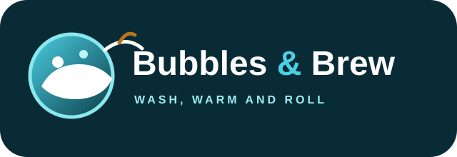

Basic Wash
Exterior wash and dry for a reliable everyday refresh.
From UGX 15,000

Professional car wash and vehicle care, with great coffee, food and a better place to wait.
Designed around a clear promise: consistent vehicle care, a clean handover and less waiting around.
Exterior wash and dry for a reliable everyday refresh.
Exterior clean plus interior attention for a complete reset.
Detail-focused care for customers who want their vehicle looking its best.
While the team works on your vehicle, you can slow down, grab a coffee, enjoy a bite or take care of yourself.
Our digital workflow is being designed so a customer can book, check in, follow progress and receive a receipt without chasing the team.
Simple plans for everyday drivers and business fleets. Final pricing can be adjusted before launch.
Behind the customer experience is a planned operations layer for bookings, wash bays, staff, receipts, loyalty and management reporting.
Choose a service and preferred time. The live version will send this booking into the Bubbles & Brew operations queue.
The first release is deliberately lightweight. The architecture is ready to add secure data, staff roles, payments and notifications without rebuilding the customer experience.
Yes. Payment will be connected through a secure backend once the payment provider and reconciliation rules are approved.
Yes. The planned staff dashboard includes bay assignment, status changes, quality checks and completion.
Yes. Fleet accounts are part of the architecture, with vehicles, visit history and monthly reporting.
Yes. Completed transactions can generate a digital receipt and notification.